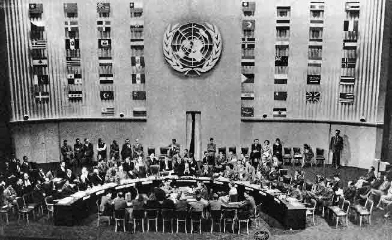

History of the Word
The first recorded usage of the word genocide was by a Polish-Jewish lawyer named Raphael Lemkin in 1944 after having fled the persecution of the Holocaust by moving to America. He recognized that the act of mass killings of certain groups was nothing new but found that such crimes had no name to them, nor were there any laws that could stop similar atrocities from happening in the future. After the loss of several family members in the Holocaust and learning about the Armenian Genocide and how the Ottoman Empire faced no repercussions for their actions, Lemkin was outraged, which led to him taking matters into his own hands. He decided to give such acts of brutality a name and settled on genocide, genos meaning race or tribe in the Greek language, and cide meaning killing in Latin. He defined this new term, genocide, as “the destruction of a nation or an ethnic group.” (Rappaport, Where did the word "genocide" come from?) With his newly forged word, Lemkin set out to write a book, Axis Rule in Occupied Europe, where he would debut his word “genocide” on the world stage and argue for the actions that constitute genocide to be deemed an international crime.
A photo of Raphael Lemkin
World War 2 and the United Nations
Following the end of World War II, the United Nations went on to set up the International Military Tribunal at Nuremberg, where it would punish 22 Nazi German leaders for their crimes against humanity committed during the war. During this time, Lemkin decided to head back to Europe to work as an advisor to Justice Robert H. Jackson, the lead prosecutor during the Nuremberg trials. The International Military Tribunal was the first international court to use the term genocide during their arraignment. In the eyes of Lemkin, this was a partial success as the United Nations did punish those who committed genocide. Still, the court tried the Nazi Leaders under crimes against humanity and not genocide. Such a setback did not stop Lemkin from further trying to persuade the UN to acknowledge genocide as an international crime, and he succeeded in his attempts on December 9th, 1948. On this date, the United Nations approved the Convention on the Prevention and Punishment of the Crime of Genocide, better known as the Genocide Convention. The Genocide Convention outlined what we know genocide as today and describes it as the following: “In the present Convention, genocide means any of the following acts committed with intent to destroy, in whole or in part, a national, ethnical, racial or religious group, as such: (a) Killing members of the group; (b) Causing serious bodily or mental harm to members of the group; (c) Deliberately inflicting on the group conditions of life calculated to bring about its physical destruction in whole or in part; (d) Imposing measures intended to prevent births within the group; (e) Forcibly transferring children of the group to another group.” (Convention on the prevention and punishment of the crime of genocide) While the previous conditions may seem like they give a relatively clear definition of what genocide is, there is one factor that plays a significant role that Article II did not list: intent. Intent is not something that can be physically measured unlike the previously mentioned circumstances, so it makes the crime of genocide distinctive to others as we cannot always prove the intent of someone when they commit such heinous acts. Furthermore, when convicting someone of genocide, the group suffering from the attack must be targeted as a whole and not just individuals that pertain to the group.
A photo of the 1948 General Assembly of the United Nations adopting the Convention on the Prevention and Punishment of Genocide.
Conclusion
In conclusion, following the inception of the word, it’s been used as an encompassing term to describe subsequent horrors such as The Genocide in Darfur, The Rwandan Genocide, the Genocide in Bosnia and Herzegovina, etc. Without such a word in existence, we wouldn’t have a name for a crime that could potentially go unpunished, just like in previous instances, only to have history repeat itself.
Examples by Michelle Lopez